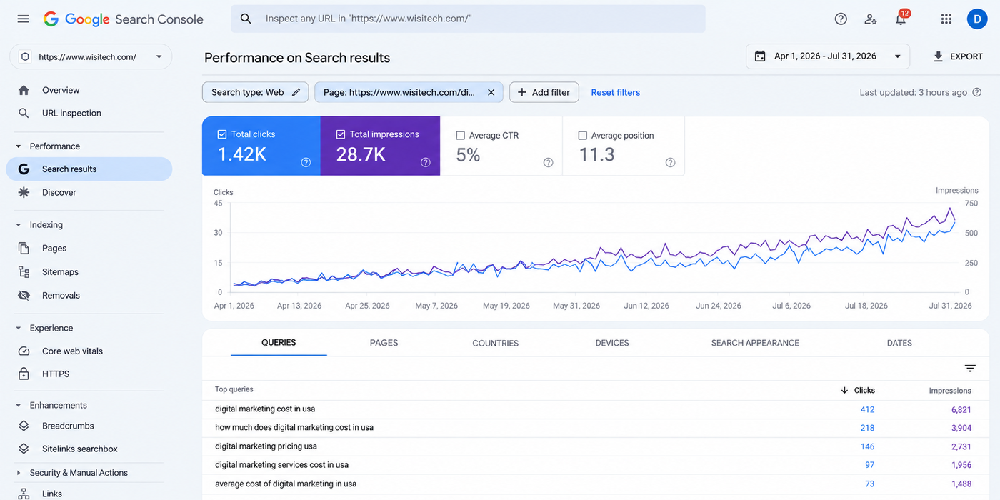

GGoogle Search Console · Wisitech
Apr 1 - Jul 31, 2026
Digital Marketing Cost in the USA
1.42Kclicks
28.7Kimpressions
4.95%calculated CTR
11.3avg. position
One blog page generated 1,420 organic clicks from 28,700 impressions. The 4.95% CTR is calculated directly from those two figures.
